4 Two Parameters
In Chapter 2, we learned how to do inference. We created a joint distribution of the models under consideration and the data which might be observed. Once we observed the data, we went from the joint distribution to the conditional distribution of possible models given the data which we did, in fact, observe. That conditional distribution, suitably normalized, was our posterior probability distribution over the space of possible models. With that distribution, we can answer any question we might (reasonably) ask.
But what a pain in the ass that whole process was! Do professionals actually go through all those steps every time they work on a data science problem? No! That would be absurd. Instead, professionals use standard tools which, in an automated fashion, take care of those steps, taking us directly from assumptions and data to the posterior:
\[\text{Prob}(\text{models} | \text{data} = \text{data we observed})\]
Even then, however, the relative likelihood of different models is not that important. Models are invisible, mental entities with no more physical presence than unicorns or leprechauns. In the world itself, we make and test predictions. People with better models make better predictions. That is what matters.
Chapter 3 used models with just one parameter: the number of red beads, which we can also transform into, \(\rho\), the number of red beads divided by the total number of beads in the bowl. The model in Chapter 3 was binomial, and there is only one unknown parameter \(\rho\) in such models. In this chapter, we have two unknown parameters: the mean \(\mu\) height in the US and the standard deviation, \(\sigma\), of the normally distributed error term.
The reason for making models is not, primarily, that making models is fun – although it is! The reason is that the world confronts us. Make decisions we must. We must decide between options X or Y. We must choose from actions A, B and C. Confronted by a choice, we need to make a model of the world to help us choose wisely.
The real world is complex. Any substantive decision problem includes a great deal of complexity and requires even more context. We do not have the time to get into that level of detail now. So, we simplify. We are going to create a model of height for adult men. We will then use that model to answer four questions:
What is the average height of men?
What is the probability that the next man we meet will be taller than 180 centimeters?
What is the probability that, among the next 4 men we meet, the tallest is at least 10 cm taller than the shortest?
What is our posterior probability distribution for the height of the 3rd tallest man out of the next 100 we meet?
The hope for this chapter is that, by answering these four questions, we’ll gain a better and more thorough understanding of how professionals do data science.
Data science is ultimately a moral act, so we will use the four Cardinal Virtues — Wisdom, Justice, Courage and Temperance — to organize our approach.
4.1 Wisdom
Wisdom begins with the Preceptor Table. What data would we, ideally, require to answer our questions? We then explore the data that we actually have. We apply the concept of validity to ensure that the data we want and the data we have are similar enough to allow the latter to inform us about the former. If so, we describe the population from which both the Preceptor Table and out data are drawn.
4.1.1 Preceptor Table

What rows and columns of data do you need such that, if you had them all, the calculation of the quantity of interest would be trivial? If you want to know the average height of an adult in India, then the Preceptor Table would include a row for each adult in India and a column for their height. In this scenario, we want to know the average height for men, where “men” includes all males on Earth that are at least 18 years old.
One key aspect of this Preceptor Table is whether or not we need more than one potential outcome in order to calculate our estimand. Mainly: are we are modeling (just) for prediction or are we (also) modeling for causation? Do we need a causal model, one which estimates that attitude under both treatment and control? In a causal model, the Preceptor Table would require two columns for the outcome. In this case, we are not modeling for causation; thus, we do not need two outcome columns.
Predictive models care nothing about causation. Causal models are often also concerned with prediction, if only as a means of measuring the quality of the model. Here, we are looking at prediction.
So, what does our Preceptor Table look like? Assuming we are predicting height for every adult male on planet Earth at this moment in time, we would have height data for every male at least 18 years of age. This means that we would have about 4 billion rows, one for each male, along with a column for each individual’s height.
Here are some rows from our Preceptor Table:
| ID | Sex | Height (cm) |
|---|---|---|
| Person 1 | Male | 150 |
| Person 2 | Male | 172 |
| ... | ... | ... |
| Person 45000 | Male | 160 |
| Person 45001 | Male | 142 |
| ... | ... | ... |
This table would extend all the way until person 4 billion-and-something. If we had this table, all of our questions could be answered with simple math and/or simulations. No inference necessary if we have a Preceptor Table. But what does our actual data look like?
4.1.2 EDA for nhanes
In our quest to find suitable data, consider the nhanes dataset from the National Health and Nutrition Examination Survey conducted from 2009 to 2011 by the Centers for Disease Control and Prevention.
library(tidyverse)
library(primer.data)
library(skimr)
glimpse(nhanes)Rows: 10,000
Columns: 15
$ survey <int> 2009, 2009, 2009, 2009, 2009, 2009, 2009, 2009, 2009, 2…
$ gender <chr> "Male", "Male", "Male", "Male", "Female", "Male", "Male…
$ age <int> 34, 34, 34, 4, 49, 9, 8, 45, 45, 45, 66, 58, 54, 10, 58…
$ race <chr> "White", "White", "White", "Other", "White", "White", "…
$ education <fct> High School, High School, High School, NA, Some College…
$ hh_income <fct> 25000-34999, 25000-34999, 25000-34999, 20000-24999, 350…
$ weight <dbl> 87.4, 87.4, 87.4, 17.0, 86.7, 29.8, 35.2, 75.7, 75.7, 7…
$ height <dbl> 164.7, 164.7, 164.7, 105.4, 168.4, 133.1, 130.6, 166.7,…
$ bmi <dbl> 32.22, 32.22, 32.22, 15.30, 30.57, 16.82, 20.64, 27.24,…
$ pulse <int> 70, 70, 70, NA, 86, 82, 72, 62, 62, 62, 60, 62, 76, 80,…
$ diabetes <int> 0, 0, 0, 0, 0, 0, 0, 0, 0, 0, 0, 0, 0, 0, 0, 0, 0, 0, 0…
$ general_health <int> 3, 3, 3, NA, 3, NA, NA, 4, 4, 4, 4, 4, 2, NA, NA, 3, NA…
$ depressed <fct> Several, Several, Several, NA, Several, NA, NA, None, N…
$ pregnancies <int> NA, NA, NA, NA, 2, NA, NA, 1, 1, 1, NA, NA, NA, NA, NA,…
$ sleep <int> 4, 4, 4, NA, 8, NA, NA, 8, 8, 8, 7, 5, 4, NA, 5, 7, NA,…nhanes includes 15 variables, including physical attributes like weight and height. Let’s restrict our attention to three varaibles: age, gender and height.
nhanes |>
select(age, gender, height)# A tibble: 10,000 × 3
age gender height
<int> <chr> <dbl>
1 34 Male 165.
2 34 Male 165.
3 34 Male 165.
4 4 Male 105.
5 49 Female 168.
6 9 Male 133.
7 8 Male 131.
8 45 Female 167.
9 45 Female 167.
10 45 Female 167.
# ℹ 9,990 more rowsExamine a random sample:
nhanes |>
select(age, gender, height) |>
slice_sample(n = 5)# A tibble: 5 × 3
age gender height
<int> <chr> <dbl>
1 21 Male 176.
2 45 Male 167.
3 77 Female 164.
4 6 Male 126.
5 52 Female 155.We think of both age and height as numbers. And they are numbers! But R distinguishes between “integers” and “doubles,” only the second of which allow for decimal values. In the nhanes data, age is an integer and height is a double.
nhanes |>
select(age, gender, height) |>
glimpse()Rows: 10,000
Columns: 3
$ age <int> 34, 34, 34, 4, 49, 9, 8, 45, 45, 45, 66, 58, 54, 10, 58, 50, 9,…
$ gender <chr> "Male", "Male", "Male", "Male", "Female", "Male", "Male", "Fema…
$ height <dbl> 164.7, 164.7, 164.7, 105.4, 168.4, 133.1, 130.6, 166.7, 166.7, …Be on the lookout for anything suspicious. Are there any NA’s in your data? What types of data are the columns, i.e. why is age characterized as integer instead of double? Are there more females than males?
You can never look at your data too closely.
In addition to glimpse(), we can run skim(), from the skimr package, to calculate summary statistics.
nhanes |>
select(age, gender, height) |>
skim()| Name | select(nhanes, age, gende… |
| Number of rows | 10000 |
| Number of columns | 3 |
| _______________________ | |
| Column type frequency: | |
| character | 1 |
| numeric | 2 |
| ________________________ | |
| Group variables | None |
Variable type: character
| skim_variable | n_missing | complete_rate | min | max | empty | n_unique | whitespace |
|---|---|---|---|---|---|---|---|
| gender | 0 | 1 | 4 | 6 | 0 | 2 | 0 |
Variable type: numeric
| skim_variable | n_missing | complete_rate | mean | sd | p0 | p25 | p50 | p75 | p100 | hist |
|---|---|---|---|---|---|---|---|---|---|---|
| age | 0 | 1.00 | 36.74 | 22.40 | 0.0 | 17.0 | 36 | 54.0 | 80.0 | ▇▇▇▆▅ |
| height | 353 | 0.96 | 161.88 | 20.19 | 83.6 | 156.8 | 166 | 174.5 | 200.4 | ▁▁▁▇▂ |
Interesting! There are 353 missing values of height in our subset of data. Just using glimpse() does not show us that. Let’s filter out the NA’s using drop_na(). This will delete the rows in which the value of any variable is missing. Because we want to examine height in men (not boys, nor females), let’s limit our data to only include adult males.
ch3 <- nhanes |>
filter(gender == "Male", age >= 18) |>
select(height) |>
drop_na()Let’s plot this data using geom_histogram().
ch3 |>
ggplot(aes(x = height)) +
geom_histogram(bins = 50) +
labs(x = "Height (cm)",
y = "Count",
title = "Male Adult Height in the US") +
theme_classic()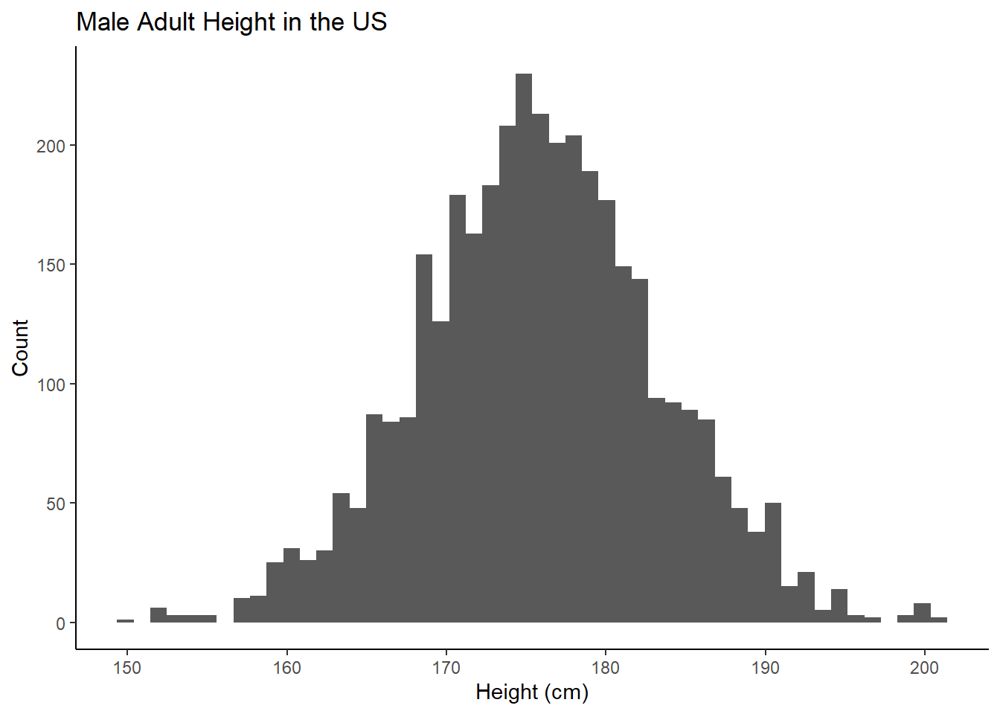
For pedagogical purposes, we won’t use all the NHANES data. Instead, we will randonly sample 50 observations and then pretend that this is all the data we have access to when trying to answer our questions.
# We start by keeping all the adult males, just as we did above.
ch3_all <- nhanes |>
filter(gender == "Male", age >= 18) |>
select(height) |>
drop_na()
# The `set.seed()` function ensures that the same 50 observations are selected
# every time this code is run.
set.seed(9)
# Up till now, we have just been using pipes and then "spitting" out the result.
# Now, we want to create a new object, `ch3`, which we will use for the rest of
# the chapter.
ch3 <- ch3_all |>
slice_sample(n = 50)Will the data we have — which is only for a sample of adult American men more than a decade ago — allow us to answer our questions, however roughly? Only if the assumption of validity makes sense.
4.1.3 Validity
Validity involves our columns. More specifically, whether our columns mean the same thing. Does “height” in our Preceptor Table mean the same thing as “height” in NHANES? Almost certainly. Of course, we need to be careful about mistakes like measurement differences, like centimeters in one and inches in the other. And there can be issues like: Are measurements taken with shoes on or shoes off? But, for the most part, the “height” variable in NHANES in 2010 is a valid proxy for the “height” of individuals today. We can stack the two data sets together and consider them to have come from the same population.
4.1.4 Population
One of the most important components of Wisdom is the concept of the “population.”
The population is not the set of people for which we have data — the participants in the CDC’s Health and Nutrition Examination Survey conducted from 2009 to 2011. This is the dataset. Nor is it the set of all the individuals about whom we would like to have data. Those are the rows in the Preceptor Table. The population is the larger — potentially much larger — set of individuals which include both the data we have and the data we want. Generally, the population will be much larger than either the data we have or the data we want. In fact, there is almost always a time dimension to consider. We generally want to make inferences about right now or about the future. By definition, the data we have is always from the past.
In this case, we want to predict average height for males today, not for people in 2009 – 2011. We also want to predict height for males outside the United States, a group that is excluded from our dataset. Is it reasonable to generate conclusions for the world from this group? Maybe? We have limited data to work with and we have to determine how far we are willing to generalize to other groups.
It is a judgment call, a matter of Wisdom, as to whether or not we may assume that the data we have and the data we want to have (i.e., the Preceptor Table) are drawn from the same population.
In the social sciences, there is never a perfect relationship between the data you have and the question you are trying to answer. Data for American males in the past is not the same thing as data for American males today. Nor is it the same as the data for men in France or Mexico. Yet, this data is relevant. Right? It is certainly better than nothing.
Using not-perfect data is generally better than using no data at all.
Is not-perfect data always better? No! If your problem is estimating the median height of 5th grade girls in Tokyo, we doubt that our data is at all relevant. Wisdom recognizes the danger of using non-relevant data to build a model and then mistakenly using that model in a way which will only make the situation worse. If the data won’t help, don’t use the data, don’t build a model. Better to just use your common sense and experience. Or find better data.
4.2 Justice

Having looked at our data and decided that it is “close enough” to our questions that creating a model will help us come up with better answers, we move on to Justice.
Justice emphasizes a few key concepts:
- The Population Table, a structure which includes a row for every unit in the population. We generally break the rows in the Population Table into three categories: the data for units we want to have (the Preceptor Table), the data for units which we actually have (our actual data), and the data for units we do not care about (the rest of the population, not included in the data or the Preceptor Table).
- Is our data representative of the population?
- If the problem is causal, can we assume unconfoundedness?
We then make an assumption about the data generating mechanism.
4.2.1 The Population Table
The Population Table shows rows from three sources: the Preceptor Table, the actual data, and the population (outside of the data).
Our Preceptor Table rows contain the information that we would want to know in order to answer our questions. These rows contain entries for our covariates (sex and year) but they do not contain any outcome results (height). We are trying to answer questions about the male population in 2021, so our sex entries for these rows will read “Male” and our year entries of these rows will read “2021”.
Our actual data rows contain the information that we do know. These rows contain entries for both our covariates and the outcomes. In this case, the actual data comes from a study conducted on males in 2009-2011, so our sex entries for these rows will read “Male” and our year entries of these rows will either read “2009”, “2010”, or “2011”.
Our other rows contain no data. These are subjects which fall under our desired population, but for which we have no data. As such, all outcomes and covariates are missing. (A subtle point is that, even for other data, we “know” the ID and the Year for each subject. Of course, we don’t really know these things, but, conceptually, we are defining the meaning of those rows on the basis of those variables.)
| Source | Sex | Year | Height |
|---|---|---|---|
Preceptor Table |
Male |
2021 |
? |
Preceptor Table |
Male |
2021 |
? |
… |
… |
… |
… |
Actual Data |
Male |
2009 |
180 |
Actual Data |
Male |
2011 |
160 |
Actual Data |
Male |
2010 |
168 |
… |
… |
… |
… |
Other |
? |
? |
? |
Other |
? |
? |
? |
Other |
? |
? |
? |
4.2.2 Representativeness
As we’ve stated above, representativeness involves our rows. More specifically, are the rows that we do have data for representative of the rows for which we do not have data? Ideally, the data we have is a random, unbiased selection from our population, and so the answer to our question is yes.
For our nhanes data, is this the case? It is time to investigate.
According to the CDC, individuals are invited to participate in NHANES based on a randomized process. First, the United States is divided into a number of geographical groups (to ensure counties from all areas). From each of these groups, counties are randomly selected to participate. After a county has been randomly selected, members of the households in that county are notified of the upcoming survey, and must volunteer their time to participate. It is clear that this process goes through several layers of randomization (promising!). That being said, many counties are excluded by the end of the process. It is also possible for certain groups or communities to be less representative of the greater population, though we cannot know that for certain.
There is also the fact that participation is voluntary. Perhaps certain individuals (immobile, elderly, anxious) are less likely to participate. Perhaps individuals that are hospitalized do not get the opportunity to participate. This impacts our data!
Regardless, we can assume that this process ensures that all people in the United States have a somewhat equal chance of being surveyed. Thus, our data is representative of our population.
4.2.3 Functional form
However, a little mathematical notation will make our modeling assumptions clear, will bring some precision to our approach. In this case:
\[ y_i = \mu + \epsilon_i \] with \(\epsilon_i \sim N(0, \sigma^2)\). \(y_i\) is the height of male \(i\). \(\mu\) is the average height of all males in the population. \(\epsilon_i\) is the “error term,” the difference between the height of male \(i\) and the average height of all males.
\(\epsilon_i\) is normally distributed with a mean of 0 and a standard deviation of \(\sigma\). The mean being 0 relates to our concept of accuracy; we are assuming that our data is representative enough to be accurate, and so we can expect our average error to be 0. The standard deviation, on the other hand, relates to our concept of precision; the smaller \(\sigma\) is, the more precise our data is, and the larger \(\sigma\) is, the less precise our data is.
This is the simplest model we can construct. Note:
- The model has two unknown parameters: \(\mu\) and \(\sigma\). Before we can do anything else we need to estimate the values of these parameters. Can we ever know their exact value? No! Perfection lies only in God’s own R code. But, by using a Bayesian approach similar to what we used in Chapters Chapter 2 and Chapter 3, we will be able to create a posterior probability distribution for each parameter.
The model is wrong, as are all models.
The parameter we most care about is \(\mu\). That is the parameter with a substantively meaningful interpretation. Not only is the meaning of \(\sigma\) difficult to describe, we also don’t particular care about its value. Parameters like \(\sigma\) in this context are nuisance or auxiliary parameters. We still estimate their posterior distributions, but we don’t really care what those posteriors look like.
\(\mu\) is not the average height of the men in the sample. We can calculate that directly. It is 175.606. No estimation required! Instead, \(\mu\) is the average height of men in the population. Recall from the discussions in Chapter 3 that the population is the universe of people/units/whatever about which we seek to draw conclusions. On some level, this seems simple. On a deeper level, it is very subtle. For example, if we are walking around Copenhagen, then the population we really care about, in order to answer our three questions, is the set of adult men which we might meet today. This is not the same as the population of adult men in the US in 2010. But is it close enough? Is it better than nothing? We want to assume that both men from
nhanes(the data we have) and men we meet in Copenhagen today (the data we want to have) are drawn from the same population. Each case is a different and the details matter.\(\sigma\) is an estimate for the standard deviation of the errors, i.e., variability in height after accounting for the mean.
Consider:
\[\text{outcome} = \text{model} + \text{what is not in the model}\] In this case, the outcome is the height of an individual male. This variable, also called the “response,” is what we are trying to understand and/or explain and/or predict. The model is our creation, a mixture of data and parameters, an attempt to capture the underlying structure in the world which generates the outcome.
What is the difference between the outcome and the model? By definition, it is what is not in the model, all the blooming and buzzing complexity of the real world. The model will always be incomplete in that it won’t capture everything. Whatever the model misses is thrown into the error term.
4.3 Courage

In data science, we deal with words, math, and code, but the most important of these is code. We need Courage to create the model, to take the leap of faith that we can make our ideas real.
4.3.0.1 stan_glm
Bayesian models are not hard to create in R. The rstanarm package provides the tools we need, most importantly the function stan_glm().
library(rstanarm)Warning: package 'rstanarm' was built under R version 4.3.1The first argument in stan_glm() is data, which in our case is the filtered ch3 tibble which contains 50 observations. The only other mandatory argument is the formula that we want to use to build the model. In this case, since we have no predictor variables, our formula is height ~ 1.
fit_obj <- stan_glm(data = ch3,
formula = height ~ 1,
family = gaussian,
refresh = 0,
seed = 9)Details:
This may take time. Bayesian models, especially ones with large amounts of data, can take longer than we might like. Indeed, computational limits were the main reason why Bayesian approaches were — and, to some extent, still are — little used. When creating your own models, you will often want to use the
cache = TRUEcode chunk option. This saves the result of the model so that you don’t recalculate it every time you knit your document.The
dataargument, like all such usage in R, is for the input data.If you don’t set
refresh = 0, the model will puke out many lines of confusing output. You can learn more about that output by reading the help page forstan_glm(). The output provides details on the fitting process as it runs as well as diagnostics about the final result. All of those details are beyond the scope of this book.You should always assign the result of the call of
stan_glm()to an object, as we do above. By convention, the name of that object will often include the word “fit” to indicate that it is a fitted model object.There is a direct connection between the mathematical form of the model created under Justice and the code we use to fit the model under Courage.
height ~ 1is the code equivalent of \(y_i = \mu\).The default value for
familyisgaussian, so we did not need to include it in the call above. From the Justice section, the assumption that \(\epsilon_i \sim N(0, \sigma^2)\) is equivalent to usinggaussian. If \(\epsilon_i\) had a different distribution, we would need to use a differentfamily. We saw an example of such a situation at the end of Chapter 3 when we performed the urn analysis usingstan_glm()and settingfamily = binomial.Although you can use the standalone function
set.seed()in order to make your code reproducible, it is more convenient to use theseedargument withinstan_glm(). Even though the fitting process, unavoidably, contains a random component, you will get the exact same answer if we setseed = 9and rerun this code. It does not matter what number you use for the seed.
4.3.0.1.1 Printed model
There are several ways to examine the fitted model. The simplest is to print it. Recall that just typing x at the prompt is the same as writing print(x).
fit_objstan_glm
family: gaussian [identity]
formula: height ~ 1
observations: 50
predictors: 1
------
Median MAD_SD
(Intercept) 175.6 1.2
Auxiliary parameter(s):
Median MAD_SD
sigma 8.5 0.9
------
* For help interpreting the printed output see ?print.stanreg
* For info on the priors used see ?prior_summary.stanregThe first line is telling us which model we used, in our case a stan_glm().
The second line tells us this model is using a Gaussian, or normal, distribution. We discussed this distribution in Section 2.7.2.1. We typically use this default unless we are working with a lefthand variable that is extremely non-normal, e.g., something which only takes two values like 0/1 or TRUE/FALSE. Since height is (very roughly) normally distributed, the Gaussian distribution is a good choice.
The third line gives us back the formula we provided. We are creating a model predicting height with a constant — which is just about the simplest model you can create. Formulas in R are constructed in two parts. First, on the left side of the tilde (the “~” symbol) is the “response” or “dependent” variable, the thing which we are trying to explain. Since this is a model about height, height goes on the lefthand side. Second, we have the “explanatory” or “independent” or “predictor” variables on the righthand side of the tilde. There will often be many such variables but in this, the simplest possible model, there is only one, a single constant. (The number 1 indicates that constant. It does not mean that we think that everyone is height 1.)
The fourth and fifth lines of the output tell us that we have 50 observations and that we only have one predictor (the constant). Again, the terminology is a bit confusing. What does it mean to suggest that \(\mu\) is “constant?” It means that, although \(\mu\)’s value is unknown, it is fixed. It does not change from person to person. The 1 in the formula corresponds to the parameter \(\mu\) in our mathematical definition of the model.
We knew all this information before we fit the model. R records it in the fit_obj because we don’t want to forget what we did. The second half of the display gives a summary of the parameter values. We can look at just the second half with the detail argument:
print(fit_obj, detail = FALSE) Median MAD_SD
(Intercept) 175.6 1.2
Auxiliary parameter(s):
Median MAD_SD
sigma 8.5 0.9 We see the output for the two parameters of the model: “(Intercept)” and “sigma”. This can be confusing! Recall that the thing we care most about is \(\mu\), the average height in the population. If we had the Preceptor Table — with a row for every adult male in the population we care about and no missing data — \(\mu\) would be trivial to calculate, and with no uncertainty. But only we know that we named that parameter \(\mu\). All that R sees is the 1 in the formula. In most fields of statistics, this constant term is called the “intercept.” So, now we have three things — \(\mu\) (from the math), 1 (from the code), and “(Intercept)” (from the output) — all of which refer to the exact same concept. This will not be the last time that terminology will be confusing.
At this point, stan_glm() — or rather the print() method for objects created with stan_glm() — has a problem. We have full posteriors for both \(\mu\) and \(\sigma\). But this is a simple printed summary. We can’t show the entire distribution. So, what are the best few numbers to provide? There is no right answer to this question! Here, the choice is to provide the “Median” of the posterior and the “MAD_SD”.
Anytime you have a distribution, whether posterior probability or otherwise, the most important single number associated with it is some measure of its location. Where is the data? The two most common choices for this measure are the mean and median. We use the median here because posterior distributions can often be quite skewed, making the mean a less stable measure.
The second most important number for summarizing a distribution concerns its spread. How far is the data spread around its center? The most common measure used for this is the standard deviation. MAD SD, the scaled median absolute deviation, is another. If the variable has a normal distribution, then the standard deviation and the MAD SD will be very similar. But the MAD SD is much more robust to outliers, which is why it is used here. (Note that MAD SD is the same measure as what we have referred to as mad up till now. The measure is calculated with the
mad()command in R. Terminology is confusing, as usual.)
We can also change the number of digits shown:
print(fit_obj, detail = FALSE, digits = 1) Median MAD_SD
(Intercept) 175.6 1.2
Auxiliary parameter(s):
Median MAD_SD
sigma 8.5 0.9 Now that we understand the meaning of Median and MAD_SD in the above display, we can interpret the actual numbers. The median of the intercept, 175.6, is the median of our posterior distribution for \(\mu\), the average height of all men in the population. The median of sigma, 8.5, is the median of our posterior distribution for the true \(\sigma\), which can be roughly understood as the variability in the height of men, once we account for our estimate of \(\mu\).
The MAD SD for each parameter is a measure of the variability of our posterior distributions for that parameter. How spread out are they? Speaking roughly, 95% of the mass of a posterior probability distribution is located within +/- 2 MAD SDs from the median. For example, we would be about 95% confident that the true value of \(\mu\) is somewhere between 173.2 and 178.
4.3.0.1.2 Plotting the posterior distributions
Instead of doing this math in our heads, we can display both posterior probability distributions. Pictures speak where math mumbles. Fortunately, getting draws from those posteriors is easy:
fit_obj |>
as_tibble()# A tibble: 4,000 × 2
`(Intercept)` sigma
<dbl> <dbl>
1 175. 8.34
2 175. 8.16
3 174. 8.26
4 174. 8.25
5 173. 9.43
6 175. 9.24
7 174. 8.47
8 174. 8.26
9 177. 8.71
10 173. 9.06
# ℹ 3,990 more rowsThese 4,000 rows are draws from the estimated posteriors, each in its own column. These are like the vectors which result from calling functions like rnorm() or rbinom(). We can create the plot in a similar way:
fit_obj |>
as_tibble() |>
ggplot(aes(x = `(Intercept)`)) +
# Recall that after_stat() allows us to work with "stat variables" that have
# been calculated by ggplot, such as "count" and "density".
geom_histogram(aes(y = after_stat(count/sum(count))),
bins = 100) +
labs(title = "Posterior for Average Male Height",
subtitle = "American men average around 176 cm in height",
x = expression(mu),
y = "Probability",
caption = "Data source: NHANES") +
scale_y_continuous(labels = scales::percent_format(accuracy = 1)) +
theme_classic()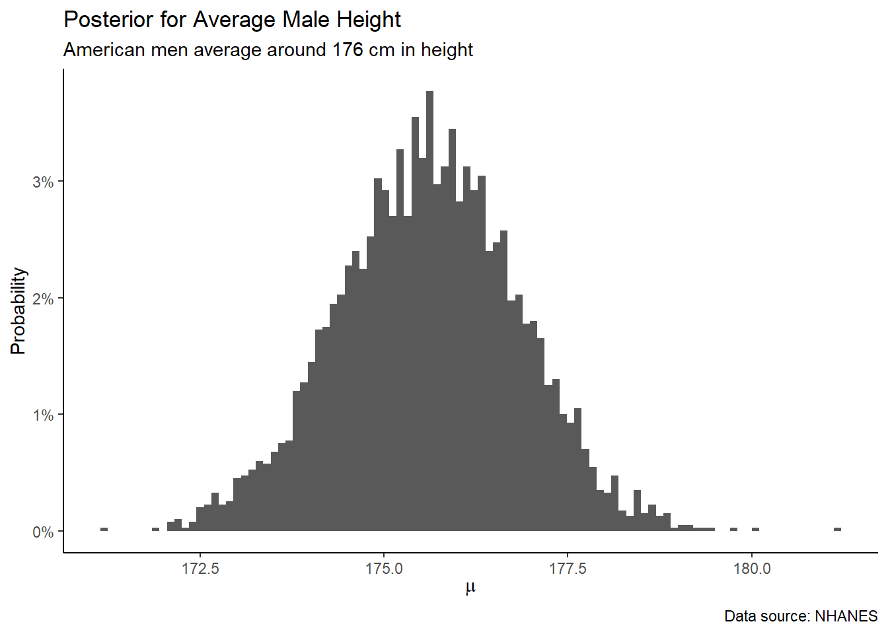
Although it is possible to have variable names like “(Intercept)”, it is not recommended. Avoid weird names! When you are stuck with them, place them in backticks. Even better, rename them, as we do above.
Note that the title includes the word “Posterior” and not the complete term “Posterior Probability Distribution.” This will be our practice going forward. “Posterior” means “Posterior Distribution” and, any posterior distribution in which the sum of the range is 1 is a “posterior probability distribution.” In most or our plots, “posterior” implies “posterior probability distribution.”
Always go back to first principles. There is some truth, an unknown number, a fact about the world. If we knew everything, if we had the Preceptor Table, inference would not be necessary. Algebra would suffice. Alas, in this imperfect world, we have no choice but to be data scientist. We are always uncertain. We summarize our knowledge of unknown numbers with posterior probability distributions, or “posteriors” for short.
# The same plot as above, but for sigma instead of mu.
fit_obj |>
as_tibble() |>
ggplot(aes(x = sigma)) +
geom_histogram(aes(y = after_stat(count/sum(count))),
bins = 100) +
labs(title = "Posterior for Standard Deviation of Male Height",
subtitle = "The standard deviation of height is around 7 to 11 cm",
x = expression(sigma),
y = "Probability",
caption = "Data source: NHANES") +
scale_y_continuous(labels = scales::percent_format(accuracy = 1)) +
theme_classic()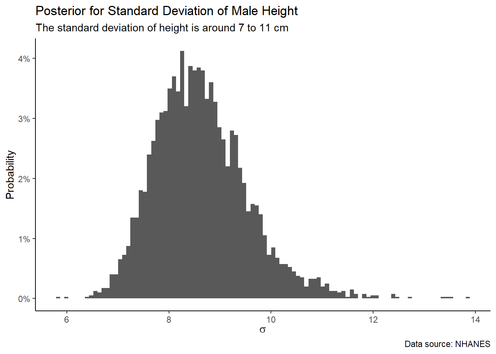
Again, \(\sigma\) is usually a nuisance parameter. We don’t really care what its value is, so we rarely plot it.
4.3.1 Testing
4.4 Temperance

We have a model. What can we do with it? Let’s answer the four questions with which we started.
4.4.1 Question 1
- What is the average height of men?
If we had the Preceptor Table, one with a row for every man alive, and with their actual height, we could calculate this number easily. Just take the average of those 3 billion or so rows! Alas, in our actual Preceptor Table, the vast majority of heights are missing. Question marks make simple algebra impossible. So, as with any unknown number, we need to estimate a posterior probability distribution. Objects created by stan_glm() make this easy to do.
newobs <- tibble(.rows = 1)
pe <- posterior_epred(object = fit_obj,
newdata = newobs) |>
as_tibble()
pe# A tibble: 4,000 × 1
`1`
<dbl>
1 175.
2 175.
3 174.
4 174.
5 173.
6 175.
7 174.
8 174.
9 177.
10 173.
# ℹ 3,990 more rowsWe will use posterior_epred() many times. The two key arguments are object, the fitted model object returned by stan_glm(), and newdata, which is the tibble which contains the covariate values associated with the unit (or units) for which we want to make a forecast. (In this case, newdata can be any tibble because an intercept-only model does not make use of covariates. We don’t really need a variable named constant, but including it does no harm.) The epred in posterior_epred() stands for expected prediction. In other words, if we pick a random adult male what do we “expect” his height to be. We also call this the expected value.
We use as_tibble() to convert the matrix which is returned by posterior_epred(). We have a tibble with 1 column and 4,000 rows. The column, unhelpfully named 1, is 4,000 draws from the posterior probability distribution for the expected height of a random male. Recall from earlier chapters how a posterior probability distribution and the draws from a posterior probability distribution are, more or less, the same thing. Or, rather, a posterior probability distribution, its ownself, is hard to work with. Draws from that distribution, on the other hand, are easy to manipulate. We use draws to answer our questions.
Converting these 4,000 draws into a posterior probability distribution is straightforward.
pe |>
ggplot(aes(x = `1`)) +
geom_histogram(aes(y = after_stat(count/sum(count))),
bins = 100) +
labs(title = "Posterior for Average Adult Male Height",
subtitle = "Note that the plot is very similar to the one created with the parameters",
x = expression(mu),
y = "Probability",
caption = "Data source: NHANES") +
scale_x_continuous(labels = scales::number_format(accuracy = 1)) +
scale_y_continuous(labels = scales::percent_format(accuracy = 1)) +
theme_classic()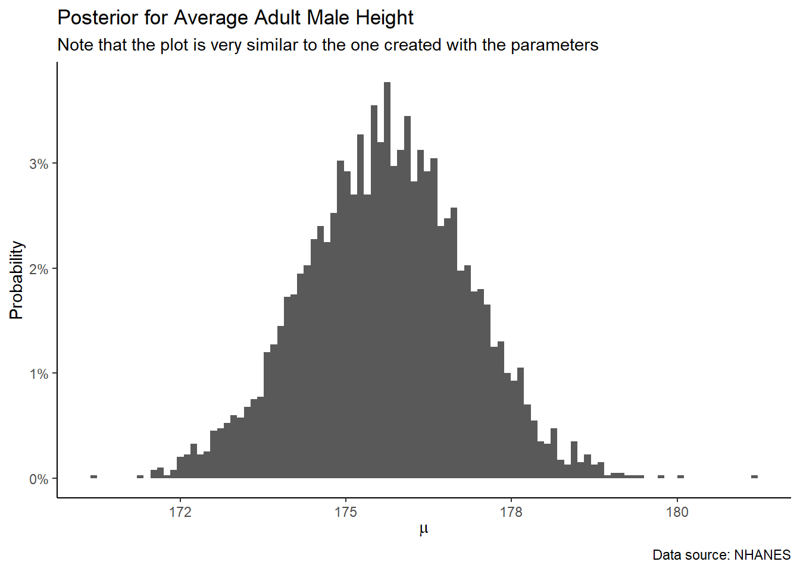
The rest of the Primer will be filled with graphics like this one. You will make dozens of them yourself. The fundamental structure for doing algebra is the real number. The fundamental structure for data science is the posterior probability distribution. You need to be able to create and interpret them.
4.4.2 Question 2
- What is the probability that the next adult male we meet will be taller than 180 centimeters?
There are two fundamentally different kinds of unknowns which we care about: expected values (as in the previous question) and predicted values. With the former, we are not interested in any specific individual. The individual value is irrelevant. With predicted values, we care, not about the average, but about this specific person. With the former, we use posterior_epred(). With the latter, the relevant function is posterior_predict(). Both functions return draws from a posterior probability distribution, but the unknown number which underlies the posterior is very different.
Recall the mathematics:
\[ y_i = \mu + \epsilon_i \]
With expected values or averages, we can ignore the \(\epsilon_i\) term in this formula. The expected value of \(\epsilon_i\) is zero since, by assumption, \(\epsilon_i \sim N(0, \sigma^2)\). However, we can’t ignore \(\epsilon_i\) when predicting the height for a single individual.
newobs <- tibble(.rows = 1)
pp <- posterior_predict(object = fit_obj,
newdata = newobs) |>
as_tibble()
pp# A tibble: 4,000 × 1
`1`
<dbl>
1 179.
2 164.
3 172.
4 172.
5 167.
6 184.
7 184.
8 159.
9 182.
10 168.
# ℹ 3,990 more rowsAs before, it is straightforward to turn draws from the posterior probability distribution into a graphic:
pp |>
ggplot(aes(x = `1`)) +
geom_histogram(aes(y = after_stat(count/sum(count))),
bins = 100) +
labs(title = "Posterior for Height of Random Male",
subtitle = "Uncertainty for a single individual is much greater than for the expected value",
x = expression(mu),
y = "Probability",
caption = "Data source: NHANES") +
scale_x_continuous(labels = scales::number_format()) +
scale_y_continuous(labels = scales::percent_format(accuracy = 1)) +
theme_classic()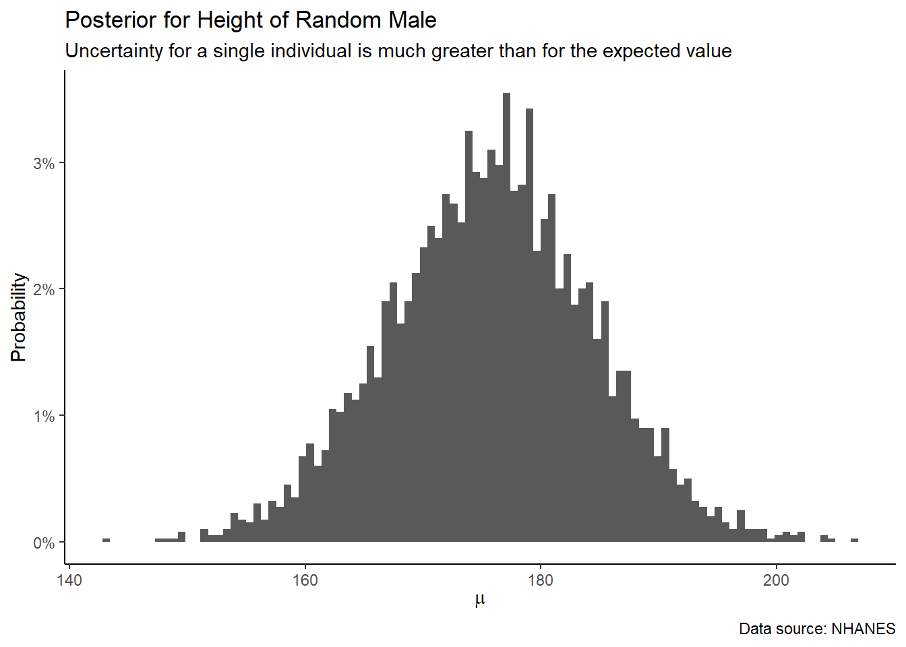
Note:
The posterior for an individual is much wider than the posterior for the expected value.
Eyeballing, seems like there is a 1 out of 3 chance that the next man we meet, or any randomly chosen man, is taller than 180 cm.
We can calculate the exact probability by manipulating the tibble of draws directly.
sum(pp$`1` > 180)/length(pp$`1`)[1] 0.309If 30% or so of the draws from the posterior probability distribution are greater than 180 cm, then there is about a 30% chance that the next individual will be taller than 180 cm.
Again, the key conceptual difficulty is the population. The problem we actually have involves walking around London, or wherever, today. The data we have involve America in 2010. Those are not the same things! But they are not totally different. Knowing whether the data we have is “close enough” to the problem we want to solve is at the heart of Wisdom. Yet that was the decision we made at the start of the process, the decision to create a model in the first place. Now that we have created a model, we look to the virtue of Temperance for guidance in using that model. The data we have is never a perfect match for the world we face. We need to temper our confidence and act with humility. Our forecasts will never be as good as a naive use of the model might suggest. Reality will surprise us. We need to take the model’s claims with a family-sized portion of salt.
4.4.3 Question 3
- What is the probability that, among the next 4 men we meet, the tallest is at least 10 cm taller than the shortest?
Bayesian models are beautiful because, via the magic of simulation, we can answer (almost!) any question. Because the question is about four random individuals, we need posterior_predict() to give us four sets of draws from four identical posterior probability distributions. Start with a new newobs:
newobs <- tibble(.rows = 4)
newobs# A tibble: 4 × 0If you need to predict X individuals, then you need a tibble with X rows, regardless of whether or not those rows are otherwise identical.
pp <- posterior_predict(object = fit_obj,
newdata = newobs) |>
as_tibble()
pp# A tibble: 4,000 × 4
`1` `2` `3` `4`
<dbl> <dbl> <dbl> <dbl>
1 177. 170. 169. 164.
2 178. 167. 164. 185.
3 177. 180. 181. 170.
4 174. 169. 166. 169.
5 176. 191. 186. 165.
6 173. 164. 160. 183.
7 181. 199. 172. 157.
8 169. 181. 174. 174.
9 185. 180. 179. 170.
10 177. 184. 164. 164.
# ℹ 3,990 more rowsThe next step is to calculate the number of interest. We can not, directly, draw the height of the tallest or shortest out of 4 random men. However, having drawn 4 random men, we can calculate those numbers, and the difference between them.
# First part of the code is the same as we did above.
pp <- posterior_predict(object = fit_obj,
newdata = newobs) |>
as_tibble() |>
# Second part of the code requires some trickery.
rowwise() |>
mutate(tallest = max(c_across())) |>
mutate(shortest = min(c_across())) |>
mutate(diff = tallest - shortest) Warning: There was 1 warning in `mutate()`.
ℹ In argument: `tallest = max(c_across())`.
ℹ In row 1.
Caused by warning:
! Using `c_across()` without supplying `cols` was deprecated in dplyr 1.1.0.
ℹ Please supply `cols` instead.pp # A tibble: 4,000 × 7
# Rowwise:
`1` `2` `3` `4` tallest shortest diff
<dbl> <dbl> <dbl> <dbl> <dbl> <dbl> <dbl>
1 167. 169. 159. 177. 177. 159. 17.6
2 179. 187. 178. 170. 187. 170. 16.8
3 169. 183. 168. 172. 183. 168. 15.2
4 158. 179. 175. 161. 179. 158. 20.9
5 182. 182. 158. 170. 182. 158. 24.5
6 166. 153. 189. 165. 189. 153. 36.0
7 169. 172. 190. 175. 190. 169. 20.3
8 172. 164. 178. 197. 197. 164. 32.1
9 190. 184. 177. 171. 190. 171. 18.7
10 161. 192. 165. 193. 193. 161. 32.4
# ℹ 3,990 more rowsThese steps serve as a template for much of the analysis we do later. It is often very hard to create a model directly of the thing we want to know. There is no easy way to create a model which estimates this height difference directly. It is easy, however, to create a model which allows for random draws.
Give us enough random draws, and a tibble in which to store them, and we can estimate the world.
Once we have random draws from the posterior distribution we care about, graphing the posterior probability distribution is the same-old, same-old.
pp |>
ggplot(aes(x = diff)) +
geom_histogram(aes(y = after_stat(count/sum(count))),
bins = 100) +
labs(title = "Posterior for Max Height Difference Among Four Men",
subtitle = "The expected value for this difference would be much more narrow",
x = "Height Difference in Centimeters",
y = "Probability",
caption = "Data source: NHANES") +
scale_x_continuous(breaks = seq(0, 50, 10),
labels = scales::number_format()) +
scale_y_continuous(labels = scales::percent_format()) 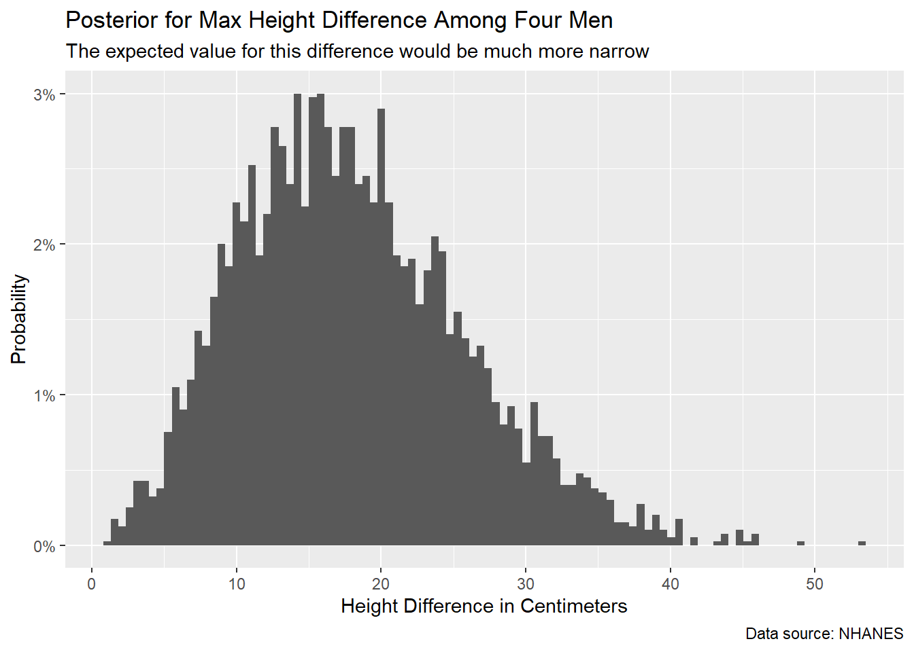
There is about an 85% chance that, when meeting 4 random men, the tallest will be at least 10 cm taller than the shortest. Exact calculation:
sum(pp$diff > 10) / length(pp$diff)[1] 0.8474.4.4 Question 4
- What is our posterior probability distribution of the height of the 3rd tallest man out of the next 100 we meet?
The same approach will work for almost any question.
newobs <- tibble(.rows = 100)
pp <- posterior_predict(object = fit_obj,
newdata = newobs) |>
as_tibble() |>
rowwise() |>
mutate(third_tallest = sort(c_across(),
decreasing = TRUE)[3])Explore the pp object. It has 101 columns: one hundred for the 100 individual heights and one column for the 3rd tallest among them. Having done the hard work, plotting is easy:
pp |>
ggplot(aes(x = third_tallest, y = after_stat(count / sum(count)))) +
geom_histogram(bins = 100) +
labs(title = "Posterior for Height of 3rd Tallest Man from Next 100",
subtitle = "Should we have more or less certainty about behavior in the tails?",
x = expression(mu),
y = "Probability",
caption = "Data source: NHANES") +
scale_x_continuous(labels = scales::number_format()) +
scale_y_continuous(labels = scales::percent_format(accuracy = 1)) 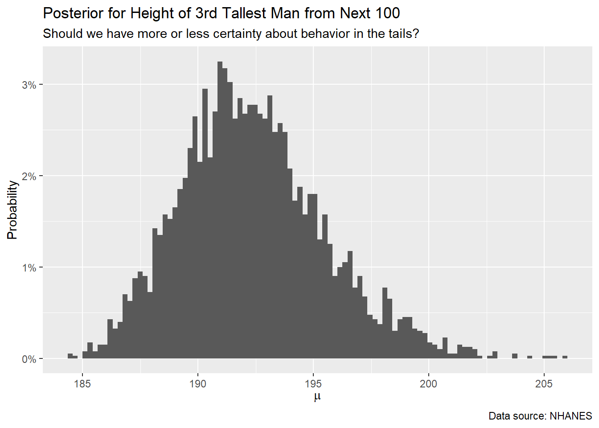
4.4.5 Three Levels of Knowledge
When answering questions as we have been, it can be easy to falsely believe that we are delivering the truth. This is not the case. In fact, there are three primary levels of knowledge which we need to understand in order to account for our uncertainty.
The three primary levels of knowledge possible knowledge in our scenario include: the Truth (the Preceptor Table), the DGM Posterior, and Our Posterior.
4.4.5.1 The Truth
If we know the Truth (with a capital “T”), then we know the Preceptor Table. With that knowledge, we can directly answer our question precisely. We can calculate each individual’s height, and any summary measure we might be interested in, like the average height for different ages or countries.
This level of knowledge is possible only under an omniscient power, one who can see every outcome in every individual under every treatment. The Truth would show, for any given individual, their actions under control, their actions under treatment, and each little factor that impacted those decisions.
The Truth represents the highest level of knowledge one can have — with it, our questions merely require algebra. There is no need to estimate a treatment effect, or the different treatment effects for different groups of people. We would not need to predict at all — we would know.
4.4.5.2 DGM posterior
The DGM posterior is the next level of knowledge, which lacks the omniscient quality of The Truth. This posterior is the posterior we would calculate if we had perfect knowledge of the data generating mechanism, meaning we have the correct model structure and exact parameter values. This is often falsely conflated with “our posterior,” which is subject to error in model structure and parameter value estimations.
What we do with the DGM posterior is the same as our posterior — we estimate parameters based on data and predict the future with the latest and most relevant information possible. The difference is that, when we calculate posteriors for an unknown value in the DGM posterior, we expect those posteriors to be perfect.
4.4.5.3 Our posterior
Unfortunately, our posterior possesses even less certainty! In the real world, we don’t have perfect knowledge of the DGM: the model structure and the exact parameter values. What does this mean?
When we go to our boss, we tell them that this is our best guess. It is an informed estimate based on the most relevant data possible. From that data, we have created a posterior for the average height of males.
Does this mean we are certain that the average height lies is the most probable outcome in our posterior? Of course not! As we would tell our boss, it would not be shocking to find out that the actual average height was less or more than our estimate.
This is because a lot of the assumptions we make during the process of building a model, the processes in Wisdom, are subject to error. Perhaps our data did not match the future as well as we had hoped. Ultimately, we try to account for our uncertainty in our estimates. Even with this safeguard, we aren’t surprised if we are a bit off.
4.5 0/1 Outcomes
Variables with well-behaved, continuous ranges are the easiest to handle. We started with height because it was simple. Sadly, however, many variables are not like height. Consider gender, a variable in nhanes which takes on two possible values: “Male” and “Female”. In the same way that we would like to construct a model which explains or predicts height, we would like to build a model which explains or predicts gender. We want to answer questions like:
What is the probability that a random person who is 180 cm tall is female?
Wisdom suggests we start by looking at the data. Because models use numbers, we need to create a new variable, female, which is 1 for Females and 0 for Males.
ch3_b <- nhanes |>
select(age, gender, height) |>
mutate(female = ifelse(gender == "Female", 1, 0)) |>
filter(age >= 18) |>
select(female, height) |>
drop_na()
ch3_b# A tibble: 7,424 × 2
female height
<dbl> <dbl>
1 0 165.
2 0 165.
3 0 165.
4 1 168.
5 1 167.
6 1 167.
7 1 167.
8 0 170.
9 0 182.
10 0 169.
# ℹ 7,414 more rowsch3_b |>
ggplot(aes(x = height, y = female)) +
geom_jitter(height = 0.1, alpha = 0.05) +
labs(title = "Gender and Height",
subtitle = "Men are taller than women",
x = "Height (cm)",
y = NULL,
caption = "Data from NHANES") +
scale_y_continuous(breaks = c(0, 1),
labels = c("Male", "Female"))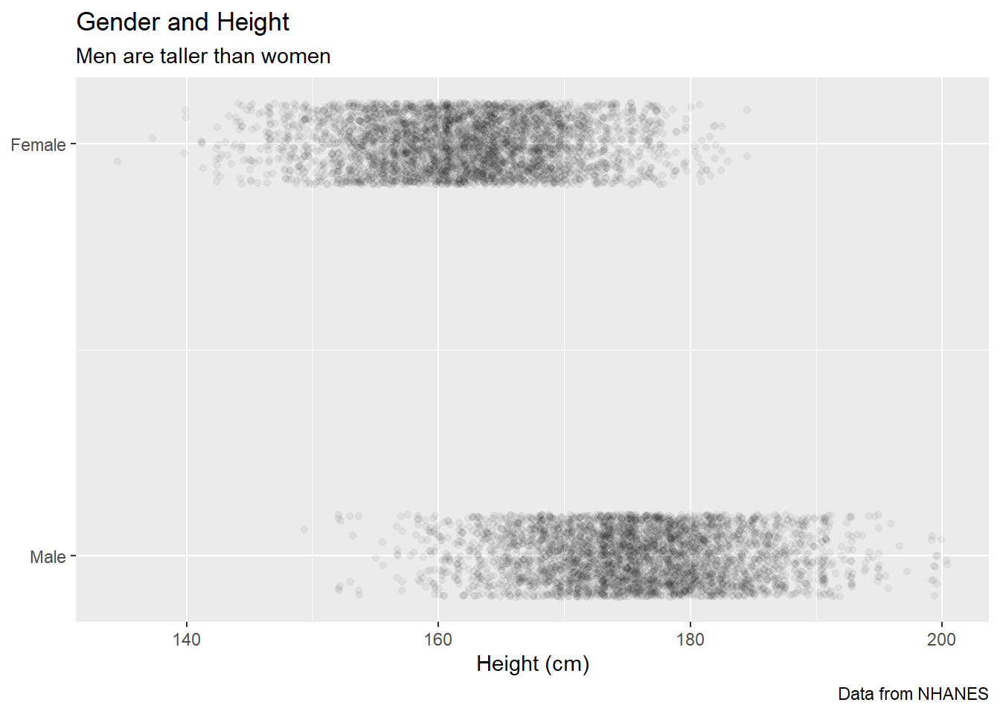
Why not just fit a linear model, as we did above? Consider:
fit_gender_linear <- stan_glm(data = ch3_b,
formula = female ~ height,
family = gaussian,
refresh = 0,
seed = 82) Recall that the default value for family is gaussian, so we did not need to include it here. Initially, the fitted model seems OK.
print(fit_gender_linear, digits = 2)stan_glm
family: gaussian [identity]
formula: female ~ height
observations: 7424
predictors: 2
------
Median MAD_SD
(Intercept) 6.22 0.07
height -0.03 0.00
Auxiliary parameter(s):
Median MAD_SD
sigma 0.36 0.00
------
* For help interpreting the printed output see ?print.stanreg
* For info on the priors used see ?prior_summary.stanregComparing two individuals who differ in height by 1 cm, we expect the taller individual to have a 3% lower probability of being female. That is not unreasonable. The problems show up at the extremes. Consider the fitted values across the range of our data.
ch3_b |>
ggplot(aes(x = height, y = female)) +
geom_jitter(height = 0.1, alpha = 0.05) +
geom_smooth(aes(y = fitted(fit_gender_linear)),
method = "lm",
formula = y ~ x,
se = FALSE) +
labs(title = "Gender and Height",
subtitle = "Some fitted values are impossible",
x = "Height (cm)",
y = NULL,
caption = "Data from NHANES") +
scale_y_continuous(breaks = c(-0.5, 0, 0.5, 1, 1.5),
labels = c("-50%", "0% (Male)",
"50%", "100% (Female)",
"150%"))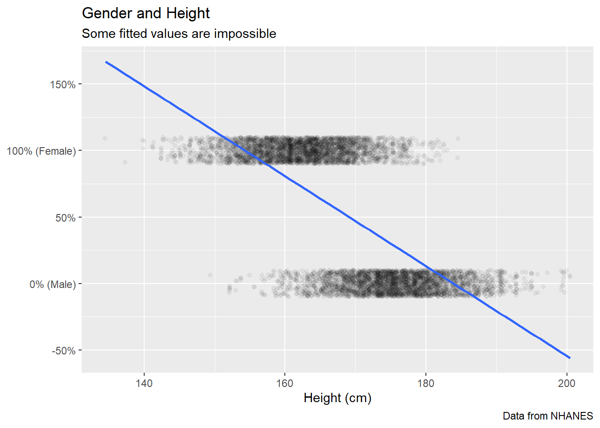
Using 1 for Female and 0 for Male allows us to interpret fitted values as the probability that a person is female or male. That is a handy and natural interpretation. The problem with a linear model arises when, as in this case, the model suggests values outside 0 to 1. Such values are, by definition, impossible. People who are 190 cm tall do not have a -25% chance of being female.
Justice suggests a different functional form, one which restricts fitted values to the acceptable range. Look closely at the math:
\[ p(\text{Female} = 1) = \frac{\text{exp}(\beta_0 + \beta_1 \text{height})}{1 + \text{exp}(\beta_0 + \beta_1 \text{height})} \]
This is an inverse logistic function, but don’t worry about the details. Mathematical formulas are never more than a Google search away. Instead, note how the range is restricted. Even if \(\beta_0 + \beta_1 \text{height}\) is a very large number, the ratio is bound below 1. Similarly, no matter how negative \(\beta_0 + \beta_1 \text{height}\) is, the ratio can never be smaller than 0. The model can not, ever, produce impossible values.
Whenever you have two categories as the outcome, you should use family = binomial.
Courage allows us to use the same tools for fitting this logistic regression as we did above in fitting linear models.
fit_2 <- stan_glm(data = ch3_b,
formula = female ~ height,
family = binomial,
refresh = 0,
seed = 27)print(fit_2, digits = 3)stan_glm
family: binomial [logit]
formula: female ~ height
observations: 7424
predictors: 2
------
Median MAD_SD
(Intercept) 43.389 0.999
height -0.257 0.006
------
* For help interpreting the printed output see ?print.stanreg
* For info on the priors used see ?prior_summary.stanregOne major difference between linear and logistic models is that parameters in the latter are much harder to interpret. What does it mean, substantively, that \(\beta_1\) is -0.26? That is a topic for a more advanced course.
Fortunately, parameters are not what we care about. They are epiphenomenon, unicorns of our imagination. Instead, we want answers to our questions, for which Temperance — and the functions in rstanarm — is our guide. Recall our question:
What is the probability that a random person who is 180 cm tall is female?
newobs <- tibble(height = 180)
pe <- posterior_epred(fit_2, newdata = newobs) |>
as_tibble()
pe |>
ggplot(aes(x = `1`)) +
geom_histogram(aes(y = after_stat(count/sum(count))),
bins = 100) +
labs(title = "Posterior for p(female | height = 180 cm)",
subtitle = "There is a 5-6% chance that a person this tall is female",
x = "Probability",
y = "Probability",
caption = "Data source: NHANES") +
scale_x_continuous(labels = scales::percent_format(accuracy = 1)) +
scale_y_continuous(labels = scales::percent_format()) 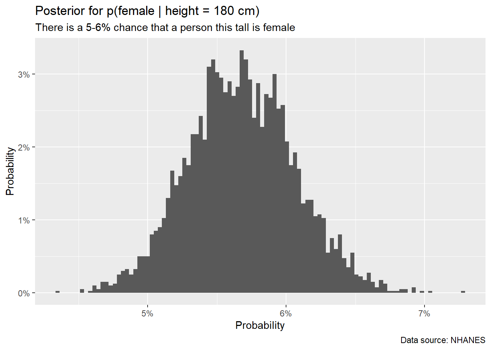
There is only about a 1 in 20 chance that a 180 centimeter tall person is female.
Note that both the x and y axes are probabilities. Whenever we create a posterior probability distribution then, by definition, the y-axis is a probability. The x-axis is the unknown number we do not know. That unknown number can be anything — the weight of the average male, the height of 3rd tallest out of 100 men, the probability that a 180 cm tall person is female. A probability is just another number. The interpretation is the same as always.
Another major difference with logistic models is that posterior_epred() and posterior_predict() return different types of objects. posterior_epred() returns probabilities, as above. posterior_predict(), on the other hand, returns predictions, as its name suggests. In other words, it returns zeros and ones. Consider another question:
In a group of 100 people who are 180 centimeters tall, how many will be women?
newobs <- tibble(height = rep(180, 100))
pp <- posterior_predict(fit_2, newdata = newobs) |>
as_tibble()
pp[, 1:4]# A tibble: 4,000 × 4
`1` `2` `3` `4`
<int> <int> <int> <int>
1 0 0 0 0
2 0 0 0 0
3 0 0 0 0
4 0 0 0 0
5 0 0 0 0
6 0 0 0 0
7 0 0 0 0
8 0 0 0 0
9 0 0 0 0
10 1 0 0 0
# ℹ 3,990 more rowsWe show just the first 4 columns for convenience. Each column is 4,000 draws from the posterior predictive distribution for the gender of a person who is 180 cm tall. (Since all 100 people have the same height, all the columns are draws from the same distribution.)
We can manipulate this object on a row-by-row basis.
pp <- posterior_predict(fit_2, newdata = newobs) |>
as_tibble() |>
rowwise() |>
mutate(total = sum(c_across()))
pp[, c("1", "2", "100", "total")]# A tibble: 4,000 × 4
# Rowwise:
`1` `2` `100` total
<int> <int> <int> <int>
1 0 0 0 5
2 0 0 0 3
3 0 0 0 7
4 0 0 0 8
5 0 0 0 6
6 0 0 0 5
7 0 0 0 5
8 0 0 0 2
9 0 0 0 6
10 0 0 0 4
# ℹ 3,990 more rowstotal is the number of women in each row. Manipulating draws on a row-by-row basis is very common.
pp |>
ggplot(aes(x = total)) +
geom_histogram(aes(y = after_stat(count/sum(count))),
bins = 100) +
labs(title = "Posterior for Number of Women among 100 People 180 cm Tall",
subtitle = "Consistent with probability estimate above",
x = "Number of Women",
y = "Probability",
caption = "Data source: NHANES") +
scale_x_continuous(labels = scales::number_format(accuracy = 1)) +
scale_y_continuous(labels = scales::percent_format()) 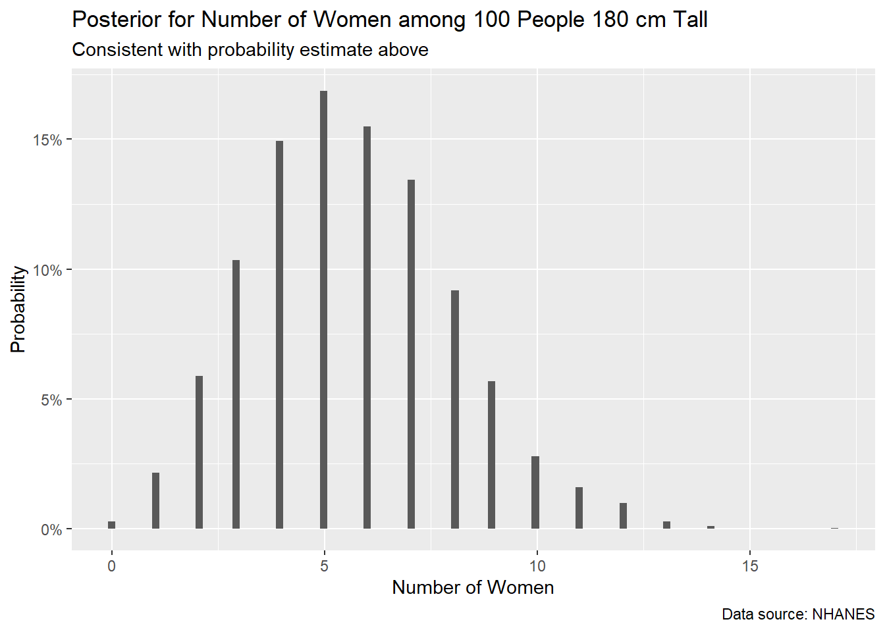
That 5 or 6 women is the most likely number is very consistent with the answer to the first question. There we found that a random person who is 180 cm tall has a 5% or 6% chance of being female. So, with 100 such people, 5 or 6 seems a reasonable total. But the expected value from posterior_epred(), although it does provide a sense of where the center of the predictive distribution will be, does not tell us much about the range of possible outcomes. For that, we need posterior_predict().
4.6 Summary
The next five chapters will follow the same process we have just completed here. We start with a decision we have to make. With luck, we will have some data to guide us. (Without data, even the best data scientist will struggle to make progress.) Wisdom asks us: “Is the data we have close enough to the decision we face to make using that data helpful?” Often times, the answer is “No.”
Once we start to build the model, Justice will guide us. Is the model descriptive or causal? What is the mathematical relationship between the dependent variable we are trying to explain and the independent variables we can use to explain it? What assumptions are we making about distribution of the error term?
Having set up the model framework, we need Courage to implement the model in code. Without code, all the math in the world is useless. Once we have created the model, we need to understand it. What are the posterior distributions of the unknown parameters? Do they seem sensible? How should we interpret them?
Temperance guides the final step. With a model, we can finally get back to the decision which motivated the exercise in the first place. We can use the model to make statements about the world, both to confirm that the model is consistent with the world and to use the model to make predictions about numbers which we do not know.
Let’s practice this process another dozen or so times.